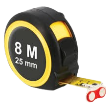

El metro es una herramienta de medición utilizada para determinar longitudes, muy común en trabajos de construcción, carpintería y tareas domésticas.
Extiende la cinta hasta la medida deseada y sujétala firmemente en el punto de inicio. Asegúrate de leer la medida en el borde exacto de la cinta.
Ver video